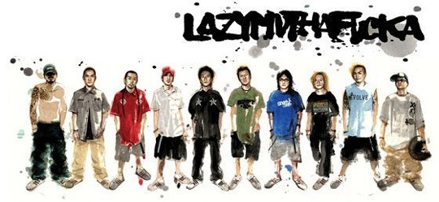
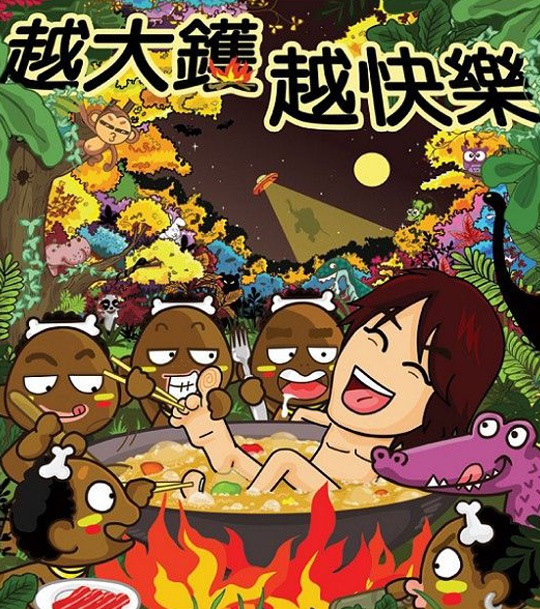

北京今天下雨了，春分后第一场雨，来得有些快，就在春分后的一天。北京这个城市，是不常下雨的，也有些害怕下雨，像今天，一场绵密的小雨就让早高峰的交通濒临瘫痪。久晴无雨的时候会变得有些盼望下雨，就像过去在家乡盼望出太阳一样。但在北京，这真不是一座适合雨的城市。 前几天看了一部法国动画片《青蛙的预言》，很孩子气的名字，我更喜欢它的另一个名字《大雨大雨一直下》，它让我想起小时候最爱的一篇科幻小说，布雷德伯里的《雨一直下》，冷冷的，很有雨季的味道，有兴趣的朋友可以去这里感受一下当年的短篇科幻经典。 当然动画片嘛，我还是喜欢明亮美好的。去年底“七橙映画放映室”放这部动画来着，因为时间关系没去成，于是回家自己下了一个。 类似于诺亚方舟的背景故事，讲的却是人与自然共生共存的主题。蜡笔画的淳朴风格，华丽丽的色彩，憨憨的可爱角色，还有法国式的幽默和浪漫。漫山遍野黄灿灿的花，吃薯条的狮子老虎，爱扭大屁股的非洲妈妈，被剥去龟壳的海龟，还有从头至尾絮叨着婚后无聊生活的大象夫妻。 疯影工作室的这部动画据说光手绘就花了四年时间，如此诚恳的一部作品，确实值得我们重新带着孩子的眼光去看看。
北京今天下雨了，春分后第一场雨，来得有些快，就在春分后的一天。北京这个城市，是不常下雨的，也有些害怕下雨，像今天，一场绵密的小雨就让早高峰的交通濒临瘫痪。久晴无雨的时候会变得有些盼望下雨，就像过去在家乡盼望出太阳一样。但在北京，这真不是一座适合雨的城市。 前几天看了一部法国动画片《青蛙的预言》，很孩子气的名字，我更喜欢它的另一个名字《大雨大雨一直下》，它让我想起小时候最爱的一篇科幻小说，布雷德伯里的《雨一直下》，冷冷的，很有雨季的味道，有兴趣的朋友可以去这里感受一下当年的短篇科幻经典。 当然动画片嘛，我还是喜欢明亮美好的。去年底“七橙映画放映室”放这部动画来着，因为时间关系没去成，于是回家自己下了一个。 类似于诺亚方舟的背景故事，讲的却是人与自然共生共存的主题。蜡笔画的淳朴风格，华丽丽的色彩，憨憨的可爱角色，还有法国式的幽默和浪漫。漫山遍野黄灿灿的花，吃薯条的狮子老虎，爱扭大屁股的非洲妈妈，被剥去龟壳的海龟，还有从头至尾絮叨着婚后无聊生活的大象夫妻。 疯影工作室的这部动画据说光手绘就花了四年时间，如此诚恳的一部作品，确实值得我们重新带着孩子的眼光去看看。
漂着的日子
最近在换住处，真的快，又一年了。当年在回龙观和朝阳区之间跑来跑去的日子，似乎也过去不远，但想起来还是有点沧桑感。回龙观的田园鸡真好吃，当时离开前的那天晚上，和晓禾同学在外面路边吃的麻辣烫，也很舒适。回龙观的街很宽，很少车，很少人。 接下来的一年在蓟门桥，倒是方便了许多，骑车上班，不用受北京的破交通之苦，在路上好不快活，舍不得骑那么快，后来都是推着走的。而且和大学同学住一起，晚上一个人回去不至于显得太凄凉。可惜离学校那么近，都没回去踢过几次球。 现在又搬到北理这边，感觉总是这几个地方转，循循环环。这里住的比以前好，可比以前贵多了。不过倒是终于能两个人住一起了，省去了周末奔波的路途之苦。多付出点也是值得的吧。 北漂一族就是这样的漂来漂去，有时想想那个住了那么久的地方，也是有点留恋。每次搬到一个新的地方，总是有许多的期待，想把房子布置得好一点，想想周边有什么地方又经济又实惠……虽然想的许多最后都没有实施，但总给我们带来过期望。生活有些期待是好的，不然活着还有什么生气呢？ [caption id=”” align=”aligncenter” width=”600”] 将近两年前刚住进去的回龙观宿舍[/caption] [caption id=”” align=”aligncenter” width=”600”] 刚入住的蓟门桥房子[/caption]
将近两年前刚住进去的回龙观宿舍[/caption] [caption id=”” align=”aligncenter” width=”600”] 刚入住的蓟门桥房子[/caption]
你知道我们将走向哪一边？
 随波逐流，是这个社会的现状，每天挤在大城市的人流里，生活带领我们走向哪一边？我们能掌握自己的未来么？最近看完电影《荒野生存》，毫不犹豫地在豆瓣打了五星。有些人在评论中说男主角应该加强一些户外运动的知识再去探险，这些人就如同影片中的一位女角色，她问男主角：为什么要把钱给烧掉，留着也许以后有需要呢？我们这些所谓现代人，就是有太多太多的束缚，来自欲望的，来自害怕的。很大程度上，我们已经不是自由身。 同样近期火热的《ONCE》，在我看完以后也不能避俗地打了五星。这个电影有种说不清楚的奇妙，说摄影制作，都是低成本的小制作，有些DV的摇晃镜头感，没什么亮点；说故事本身，并没有象一些人所说是“一段荡气回肠的浪漫故事”，虽然后来两人互有爱意，不过并没有大家希望的那样走到了一起，而且也没有什么深深的遗憾因为走不到一起表现出来，这都不符合大众看噱头，献眼泪的心理追求。再说，就是电影中的音乐了，毕竟是一部有关音乐的电影，而且奥斯卡也拿了，里面有些歌的确也不错，男主角在街头撕心裂肺，和最后大家一起在录音棚合的那首都不错，但我单听电影原声，我只打了四星。是因为以THE FRAME这个乐队的名气和才华，很多别的乐队的作品也能达到。如此说来，我为什么偏给这个音乐电影打了五星？ 最后我想到了打五星的缘由。影片过多的时间用力展现他们做音乐的情况，我们可以看到一种默契不经意地流露出来，没有过多对白，当达到了大家都满意的效果时，各自都有会心的愉悦感。这里我看到了一种音乐上的自由，默契，如果你身临其中你一定会感受更深。如果你在大学里有一群人围坐在草地上很高兴的唱歌，你一定觉得那位弹吉他的男生弹得真不错，而平时他可能只是个弹的很烂的人。因为当时你无暇顾及他的吉他技巧，因为你的心正由于相互的心灵撞击达到一种很幸福的状态。如果他弹得不算太烂，能对得上节奏；如果你唱得不算太烂，基本都没走调，那简直就是PERFECT！ 自由，是音乐这一艺术的一大的特性。想想肖申克监狱里的一群囚犯仰望大喇叭的情景。我想许多急功近利追求效益的流行音乐，都做不到。 左小祖咒出新专辑了，500元两张CD，人们大可以骂街，可他免费放到官网供人下载，又让人无话可说。第一次听完觉得这次真的很难听，可我还是坚持要多听两次，并选了第一首《小白兔》放到我们的博客背景音乐里。这两张专辑以《小白兔》开始，以《爱的荣光》结束，这两首都是如此的温暖和催人泪下，夹杂在中间的是一堆激烈的大杂烩，混乱的就如我们当下的社会。我想在一堆讽刺，烦杂纷扰过后，左小祖咒是不是也希望我们有个好的结束。 刚出生的小孩是幸福的，不管是富爸爸，还是穷爸爸；当下的抱怨是漫天的，你知道东方在哪一边？你知道生活在哪个方向？只但愿我们好人善始善终吧。 废话了三个不相关的话题，总结如下： 自由，我们何时能做到？
随波逐流，是这个社会的现状，每天挤在大城市的人流里，生活带领我们走向哪一边？我们能掌握自己的未来么？最近看完电影《荒野生存》，毫不犹豫地在豆瓣打了五星。有些人在评论中说男主角应该加强一些户外运动的知识再去探险，这些人就如同影片中的一位女角色，她问男主角：为什么要把钱给烧掉，留着也许以后有需要呢？我们这些所谓现代人，就是有太多太多的束缚，来自欲望的，来自害怕的。很大程度上，我们已经不是自由身。 同样近期火热的《ONCE》，在我看完以后也不能避俗地打了五星。这个电影有种说不清楚的奇妙，说摄影制作，都是低成本的小制作，有些DV的摇晃镜头感，没什么亮点；说故事本身，并没有象一些人所说是“一段荡气回肠的浪漫故事”，虽然后来两人互有爱意，不过并没有大家希望的那样走到了一起，而且也没有什么深深的遗憾因为走不到一起表现出来，这都不符合大众看噱头，献眼泪的心理追求。再说，就是电影中的音乐了，毕竟是一部有关音乐的电影，而且奥斯卡也拿了，里面有些歌的确也不错，男主角在街头撕心裂肺，和最后大家一起在录音棚合的那首都不错，但我单听电影原声，我只打了四星。是因为以THE FRAME这个乐队的名气和才华，很多别的乐队的作品也能达到。如此说来，我为什么偏给这个音乐电影打了五星？ 最后我想到了打五星的缘由。影片过多的时间用力展现他们做音乐的情况，我们可以看到一种默契不经意地流露出来，没有过多对白，当达到了大家都满意的效果时，各自都有会心的愉悦感。这里我看到了一种音乐上的自由，默契，如果你身临其中你一定会感受更深。如果你在大学里有一群人围坐在草地上很高兴的唱歌，你一定觉得那位弹吉他的男生弹得真不错，而平时他可能只是个弹的很烂的人。因为当时你无暇顾及他的吉他技巧，因为你的心正由于相互的心灵撞击达到一种很幸福的状态。如果他弹得不算太烂，能对得上节奏；如果你唱得不算太烂，基本都没走调，那简直就是PERFECT！ 自由，是音乐这一艺术的一大的特性。想想肖申克监狱里的一群囚犯仰望大喇叭的情景。我想许多急功近利追求效益的流行音乐，都做不到。 左小祖咒出新专辑了，500元两张CD，人们大可以骂街，可他免费放到官网供人下载，又让人无话可说。第一次听完觉得这次真的很难听，可我还是坚持要多听两次，并选了第一首《小白兔》放到我们的博客背景音乐里。这两张专辑以《小白兔》开始，以《爱的荣光》结束，这两首都是如此的温暖和催人泪下，夹杂在中间的是一堆激烈的大杂烩，混乱的就如我们当下的社会。我想在一堆讽刺，烦杂纷扰过后，左小祖咒是不是也希望我们有个好的结束。 刚出生的小孩是幸福的，不管是富爸爸，还是穷爸爸；当下的抱怨是漫天的，你知道东方在哪一边？你知道生活在哪个方向？只但愿我们好人善始善终吧。 废话了三个不相关的话题，总结如下： 自由，我们何时能做到？
Walter Martin and Paloma Munoz
Walter Martin and Paloma Munoz 两位艺术家最近的作品有两个系列，一个是TRAVELERS，是一系列外面都有卖的那种小球玩意，摇一摇里面的泡沫就漫天飞，制造雪景一样的场景，风格都是几米那类的。 另外一系列叫做ISLANDS，虽然也是几米那类的人物风格，不过这次卖的似乎是印刷品，虽然是图像的东西，但应该都不是电脑画出来的。从这两人以前的作品看，多数是装置艺术，做了很多好玩的玩意，也很有寓意。这个系列的印刷，应该也是手工做的模型然后拍摄出来的。实在是让我们这些一手鼠标一手键盘的人羡慕不已。作品当中无处不在的精致，温馨还是让我爱不释手。 网站上有两人的简历和以前的作品，值得好好收藏。私家推荐。北京这两天也下雪了，挺应景的。公司的年终晚会结束，我的心思就盼着回家了。 http://www.martin-munoz.com/
我们就是学不会普通话
 今天在张晓舟的BLOG上看到这篇文章《我们就是学不会普通话》。写得不错，把国内的HIP-HOP乐队现状分析了一下，鉴于很多人不喜欢看长篇文章，我摘抄以下几段供这些人看看，有兴趣的应该去看看原文。
假如从语言、音乐、文化、时尚四个层面来看Hip Hop在中国的现状，只能说中国的Hip Hop文化还仅仅停留在Hip Hop服饰鞋帽“外贸货”的阶段——一种徒有其表的时尚全球化或我所说的“跨国社会主义”盗版文化。至于Hip Hop延伸文化，在公安工商文化交通城管街道办事处居委会乃至奥运志愿小分队的天罗地网之下，你只能在自家墙上涂鸦，而在连人行道都被汽车占满的街上，x-game的过街老鼠也只有找死的份儿。想知道中国的街头文化吗？对不起，您只能上《城市画报》或者其他什么时尚杂志找，而休想在街上看到。 迄今为止中国的Hip Hop还难以奢谈音乐这个核心问题，绝大部分国内Hip Hop在音乐上都很弱智，音乐元素单一、节奏型单一，更不要说采样、混音、编曲。 最要命的是从语言到文化，中国Hip Hop都非常缺乏Hip Hop的灵魂：热气腾腾的街头气息。 中国Hip Hop要变得好玩，必得方言化，关键不在于你如何让人民群众喜闻乐见如何商业如何专业，如何用普通话统一祖国，而是你首先必须说人话。这就是为什么迄今为止中国Hip Hop最有活力的反而不是首都，而是说鸟语的粤港。
接下来他介绍了他觉得很好的一支广东HIPHOP乐队——“噔哚”，我之前没有听过，但我想今天回去我就会在我的电驴下载列表中加上。这篇文章让我想起之前的BLOG比赛中，其实我想介绍一下香港的LMF的文章，不过后来没有写。今天翻开相册，顺便把这张准备好很久的图片贴在此文顶部，看看这只已经解散了的LMF，我认为至今为止中国最好的HIPHOP乐队。 之前为什么没有写LMF，我想之前考虑到了一般人对于LMF的认识，就是一只粗口歌乐队，低俗。如今在我看来，我们的BLOG没有清纯MM照片，没有装可爱纯洁的倾向，我默认经常来看的朋友都应该是有自己是非分辨能力的，不会听到几句脏话就如何如何不适晕厥。LMF做到他们的音乐，歌词文化，真的是来源于他们的生活环境，讽刺香港社会，大骂香港乐团，唱出糜烂的夜生活屡见不鲜。LMF更用HIPHOP风格踩入时装界，扩张着自己的HIPHOP文化。 如今LMF已经解散，去年MC仁来北京的MIDI，我也没有见到真人，喜欢他们音乐的人都会有所遗憾。至今家里只保存着他们的一个演唱会现场，开篇就火爆震撼，在大屏幕上打出所有报纸杂志对他们的批评，俨然一副对媒体宣战的态势。我想对我一个比较沉默的人来说，打动我的HIPHOP并不多。
香港资深音乐杂志MCB在99年度的乐坛总结中把最佳中港台乐队授予了香港新晋hip-hop乐团大懒堂（LMF）。听着LMF，就好像在看一部反映香港青少年现状的电影。它从一群本地青年的角度去描述一个日渐繁荣而社会问题愈加严重的香港。像”咏春拳”通过描绘70、80年代的武馆来影射当代香港社会的无常生活。”我要踩下去”反映了日前极为流行的滑板一族的生活状态。而无论是深深自省的”今宵多珍重”还是讲述对社会、家庭和自我关系的看法的”无根草”，都令人深深感到一个香港青年彷徨与无助的内心世界。
Women醒来，阳光灿烂——《The Dead Girl》
有没有注意到，敲拼音“我们”的时候，会经常误敲成“women”。写下上面那个标题的时候，我本来就是想写“我们”的，不小心又敲错成“women”，忽然觉得这么将错就错倒也和这部下面要说的电影十分贴切。 《The Dead Girl》，一开始只知道它的中文名《谜样女孩死亡事件薄》，害我以为是一部连环杀手悬疑片，而且影片开头，荒野上那具爬满蝼蚁的女尸，和灰暗阴冷的氛围，也一直引导我往悬疑惊悚类型上想象。如果不是接下来出现第一个小标题“The Stranger”，或许我还会一直郁闷地错下去，最终也找不到悬疑片该有的答案。 其实，《The Dead Girl》就是《死亡女孩》，当然，第一个把它叫做《谜样女孩死亡事件薄》的人，肯定学过大众心理学。影片也不是什么悬疑惊悚商业片，而是不折不扣的独立电影。充斥全片的灰蓝影调，不紧不慢的叙事节奏，细腻的镜头角色表现，充满张力与个性的表演，压抑的性爱场面，共同造就了一部颇具实验气质的小众电影。 影片由一具女尸的发现，引出了5段相对独立而又同时与尸体相关联的5个女人的故事，每一个人都在压抑困顿的过往承受了太多的痛苦。不管是受母亲牵制的女人，为姐姐的死患上抑郁症的女孩，还是多年被丈夫冷落的妻子，被女儿抛弃的母亲，以及最后死在女儿生日那天的妓女，他们都在期望着新生。 结构上《Dead Girl》与我们熟悉的《Crash》、《Babel》相似，但那样的片子，看一部还行，看多了，你会觉得怎么都那么大主题，部部都想搞得深刻，搞得庞大，于是难免出现类似《Babel》里日本人那段的牵强。《Dead Girl》不一样，它很平常，很生活，但同时，痛的时候你会很痛，醒的时候你会很超脱。它给你的撞击，不像crash那般需要巨大的偶然来完成，它只是静默地流过你的伤口，深深刺痛之后，你会发现自己愈发地清醒了。 长时间的压抑过后，我很惊喜的发现，这部影片留给我最清晰的记忆却是这些话：
“你吻我的时候，我就不疼了” “清晨我们醒来，阳光灿烂” “她眼中最后留下的景象会是什么？”“树，还有天空”
mtime上，女性观众对于此部电影的评分大大超过男性观众，这也正好说明这是一部女性电影，其对于女性内心痛苦来源的探讨赢得了众多女性观众的共鸣，这种探讨也是影片实验性所在。 影片里有若干熟悉的面孔，其中我们可以发现《阳光小美女》里的小美女妈妈Toni Collette，《罪恶之城》里的Shellie，我个人很喜欢她的嗓音，另外还有《太阳浩劫》里的Cassie. 女导演Karen Moncrieff同时也是本片的编剧，目前只拍过两部电影，很值得期待。该片曾被美国媒体誉为2007年奥斯卡的最大遗珠，同时也获得了圣地牙哥影展最佳剧本奖、美国独立精神奖最佳影片3项大奖提名和法国多维尔美国电影节最高奖。 推荐指数：★★★★★
如果每个人都能出一点微薄的力量
问：看起来很平和平淡的人，你是吗？ 答：北京很大，出门就要花钱，我没有钱，于是就安静的呆在家里。平和是被迫的。
我听到最后一首《老张的花样年华》以后，以为她是四川或重庆人。后来查了查资料，发现钟童茜从广州来，现在北京霍营。这印证了我最初看到这个专辑的封面这位女生就一定要听听的感觉，因为长得太象陈敏同学了，希望陈敏同学也能看到。这张专辑由今年红人乔小刀等负责发行，终于在2007年即将过去的时候带到我们耳边。 坦白地说我听第一首同名主打歌《我想深情款款地爱上你》内向版的时候，心里有着一丝的激动和期待，非常希望接下来的几十分钟里她能使这张专辑推到我的年度最佳诸如此类，毕竟今年听到的惊喜不多（也许是自己听得少）。不过后来发生的事还是没有让我过度激动，象一些人所说，随之而来的肯定是汹涌而来的喜欢与汹涌而来的质疑，有的歌很难听，并不是所有的歌都能舒服听下来，尽管如此，也是能找到《我想深情款款地爱上你》《无题》《家门口的爱情》等旋律不错的歌曲。如果各位觉得不想去体验那些难听的歌，那也听听这几首吧。 然而这篇日志的标题，实际是乔小刀在豆瓣评论的标题。这句话，我个人的诠释是这样的：同样作为独立音乐女声，钟童茜明显和现在台湾层出不穷的那批光鲜可爱的独立女生是不一样的，也许这不是一张极其出色的专辑，但乔小刀等人出力帮忙发行，和我在BLOG里发此推荐的行为，是一样的。都在为一些我们觉得值得的东西，这个社会慢慢消失的东西，出一点微薄的力量。 最后客观地说一句，作为一张内地独立的专辑，资金不充裕的状态下，这张专辑的制作还算比较精致。比一些地下乐队要好得多，我们能看的见用心，不是在那装。 钟童茜不排斥网络下载，那就这样吧。下载地址： 1-5 http://ishare.iask.sina.com.cn/cgi-bin/fileid.cgi?fileid=2839808 6-11 http://ishare.iask.sina.com.cn/cgi-bin/fileid.cgi?fileid=2839825
近期观影笔记
《美丽密语》 在豆瓣唯美电影单里搜到这部动画片，封面很美，就下了。没想到是纯Flash的动画，时间不长，看起来比较小清新。整个画面，色彩柔和而含蓄，透着粉嫩的梦幻质感。 喜欢猫的乖巧男孩，紫色的水晶球，记忆里白色海鸥飞翔的小渔村，墨绿色的小精灵，古老灯塔里的幻想世界，还有不期而遇的爱情。女孩子幻想中的爱情故事就是这般模样了吧。此片荣获SICAF筹备新片大赛“文化及旅游局大奖”及安锡国际动画节格兰披治最佳动画长片大奖。 适合所有爱做梦的大孩子小孩子。 推荐指数： ★★★☆☆ 《回归》 看完俄罗斯导演安德烈·萨金塞夫的电影《回归》，有种说不清的情绪在心里滋生，是压抑，凝重；还是释怀，神性。一切的情绪都在那一片海里轻轻荡开了。一开始我差点就以为这是安德烈.塔可夫斯基的作品。它拥有同塔可夫斯基如出一辙的俄罗斯冷调气质。青灰苍凉的影像，静默的音乐，让你即使坐在开足暖气的房间也能感受到俄罗斯的寒意。但它那一片宁静的海，孤寂的小岛，毫无渲染的话语和最后突然来临的高潮，却有一种让你无法抗拒的力量引导着你去注目和思考。 七日的“创世纪”之旅，父亲的从无到有再到无，影片所涵盖的内容也有多层。你可以把它理解为父权及社会政治意识形态的隐喻，也可以将父亲的角色当成基督教文化中上帝的映射，也可以单纯的当成关于爱和成长的影片。此片荣获２００３年威尼斯电影节金狮奖。 推荐指数：★★★★★ 《生化危机3：灭绝》 如果不是因为米拉·乔沃维奇，如果不是因为自己曾一度是生化危机系列游戏的粉丝，如果不是因为太久没有看火爆片，这部电影应该不会列入片单。游戏改编的电影常常处境尴尬，特别是像《生化危机》这样特意向B级片靠拢的电影。普通观众会觉得它恶心，B级片粉丝会觉得它缺乏元素，游戏玩家会觉得打斗不够真实。不过还好，至少别人商业票房上成功了。这一集里，我喜欢的米拉·乔沃维奇被复制了无数个，看得我眼花缭乱。幸亏此版本清晰度较高，无论是慢慢黄沙淹没的拉斯维加斯还是凌乱冷血的医院和实验室，影像所传达的氛围还是很贴切的。米拉还是一如既往的迷离眼神和坚毅表情，从《第五元素》开始就喜欢上她这种风格。印度弯刀耍得很酷，不过最后Boss大战时，两人发功的情景让我想起周星驰的《功夫》。漫天飞舞的乌鸦让我和爸妈同时想起以前住万寿路那儿的满树乌鸦。扯远了。 推荐指数：★★★☆☆ 《自然法则：吸引定律》 一个澳洲电视工作者，在人生跌落谷底、生活即将崩溃时，偶然间读到一本百年古书，发现了一个生命中的重大秘密。于是，她开始组织一个工作团队，寻找当世知道这个祕密的人。他们都是各行各业的佼佼者，并且现身说法告诉你：了解这个秘密，就没有做不到的事；不论你是谁，你想要什么，这个秘密都能给你！以前是很排斥成功学书籍的，但这部记录片从某种程度上改变了我的看法，尽管有些地方略显偏激。 是要花时间寻找过错，专注过失？还是要花时间创造建设，正面行动？至少它告诉你永远要积极正面地思考，才能接近你心之所愿。告诉你生命中成功的标准，不是东西，不是金钱和物质，而完全在于你感觉到多少喜悦。告诉你每天都带着感恩的心，才能真正学会享受生活。 推荐指数：★★★★☆
黃子华栋笃笑——《越大鑊 越快樂》
这次时隔不久，又开SHOW了。比以前快了不少，不知道是缺钱用，还是借《奸人坚》的人气乘胜追击，总之都是要支持的了。今年还会第一次开到澳门理工大学，可惜我还是没钱没时间没入港证去看。CIN同学现在已经杀到香港了，真是羡慕。 可能非广东的朋友不了解。所谓越大鑊，越快樂的意思，就是——越遇到大麻烦，越糟糕，就越快乐。“大镬”在广东话里的有意思“糟糕了”“闯祸了”的意思。可能这次的SHOW会积极一点，所谓人生总有那么一些比较低谷的时候，如果因为错过日出美景而流泪，我们也会错过日落的美丽。黄秋生所说：人生总有低估高潮，既然是这样，低谷的时候就积极一点，尽管看看明天会如何。看黄子华栋笃笑永远都是这样的了，说了很多小市民辛酸，最后都是有笑有泪。 这次的POSTER虽然也还可以，不过颜色方面我还是喜欢上一张。最后还是祝演出成功，我就等着以后不知道谁会给我传个录音，或者CIN同学之类的带回来张DVD才能看了。 
小幸福——《天堂的孩子》
 雨夹雪，天气阴冷而潮湿。北京该要进入寒冬了。冷的时候，人才对温暖更加敏感。一顶帽子，一双手套，一声问候，一个拥抱，都会简单的让你温暖起来，随之而来的，还有小小的幸福感。我喜欢在这样的冬天，暖一壶茶，看一场温暖的电影。一部美好的电影，或许可以温暖你一整个冬季。就像若干年前我看过的那部《天堂的孩子》，还有另外一个可爱的名字《小鞋子》。 那是一部纯洁透明的电影。即使它的画质有些粗砺，故事也很简单，但正是这样的朴实和单纯可以触动我们内心深处尚未磨灭的童心。伊朗灿烂的阳光里，贫穷的孩子奔跑在狭窄残破的小巷里。一双破旧的粉色带蝴蝶结的小鞋子，是兄妹俩深藏内心的小秘密。哥哥为此磨破了双脚，就为了给妹妹赢得一双新鞋；妹妹却在发现自己的鞋穿在盲人的女儿脚上时，默然的走开了。妹妹考试时焦急的偷看老师的手表，只是担心来不及把鞋换给哥哥；得了冠军的哥哥却因为没能拿到季军才有的奖品——一双鞋而哭泣。在两个孩子的眼里，一双小鞋子是那样的重要，几乎成了他们生活的全部意义。对于新鞋的幻想，就像手中升起的肥皂小泡泡一样绚丽。直到最后，看见爸爸从商店里出来，手里拿着两双新鞋，我们才如释重负。 影片结尾，哥哥还在为自己比赛失误拿到第一而自责，他把鞋脱下来，露出两只满是血泡的脚，伸进水池，一群金鱼游过来，在水里亲吻着那双小脚。这一刻，我们都微笑了。 西亚的阳光还是那么明亮，伊朗孩子的大眼睛里，有一个小小的天堂。那里藏着一些单纯的小念头和小秘密。那是属于他们的幸福。那是富人的孩子也会羡慕的幸福，也是我们这些已经不大会用儿童的眼光看世界的成年人，久违的幸福。很多时候我们都忘了，幸福不在于拥有什么，而在于希冀什么。
雨夹雪，天气阴冷而潮湿。北京该要进入寒冬了。冷的时候，人才对温暖更加敏感。一顶帽子，一双手套，一声问候，一个拥抱，都会简单的让你温暖起来，随之而来的，还有小小的幸福感。我喜欢在这样的冬天，暖一壶茶，看一场温暖的电影。一部美好的电影，或许可以温暖你一整个冬季。就像若干年前我看过的那部《天堂的孩子》，还有另外一个可爱的名字《小鞋子》。 那是一部纯洁透明的电影。即使它的画质有些粗砺，故事也很简单，但正是这样的朴实和单纯可以触动我们内心深处尚未磨灭的童心。伊朗灿烂的阳光里，贫穷的孩子奔跑在狭窄残破的小巷里。一双破旧的粉色带蝴蝶结的小鞋子，是兄妹俩深藏内心的小秘密。哥哥为此磨破了双脚，就为了给妹妹赢得一双新鞋；妹妹却在发现自己的鞋穿在盲人的女儿脚上时，默然的走开了。妹妹考试时焦急的偷看老师的手表，只是担心来不及把鞋换给哥哥；得了冠军的哥哥却因为没能拿到季军才有的奖品——一双鞋而哭泣。在两个孩子的眼里，一双小鞋子是那样的重要，几乎成了他们生活的全部意义。对于新鞋的幻想，就像手中升起的肥皂小泡泡一样绚丽。直到最后，看见爸爸从商店里出来，手里拿着两双新鞋，我们才如释重负。 影片结尾，哥哥还在为自己比赛失误拿到第一而自责，他把鞋脱下来，露出两只满是血泡的脚，伸进水池，一群金鱼游过来，在水里亲吻着那双小脚。这一刻，我们都微笑了。 西亚的阳光还是那么明亮，伊朗孩子的大眼睛里，有一个小小的天堂。那里藏着一些单纯的小念头和小秘密。那是属于他们的幸福。那是富人的孩子也会羡慕的幸福，也是我们这些已经不大会用儿童的眼光看世界的成年人，久违的幸福。很多时候我们都忘了，幸福不在于拥有什么，而在于希冀什么。